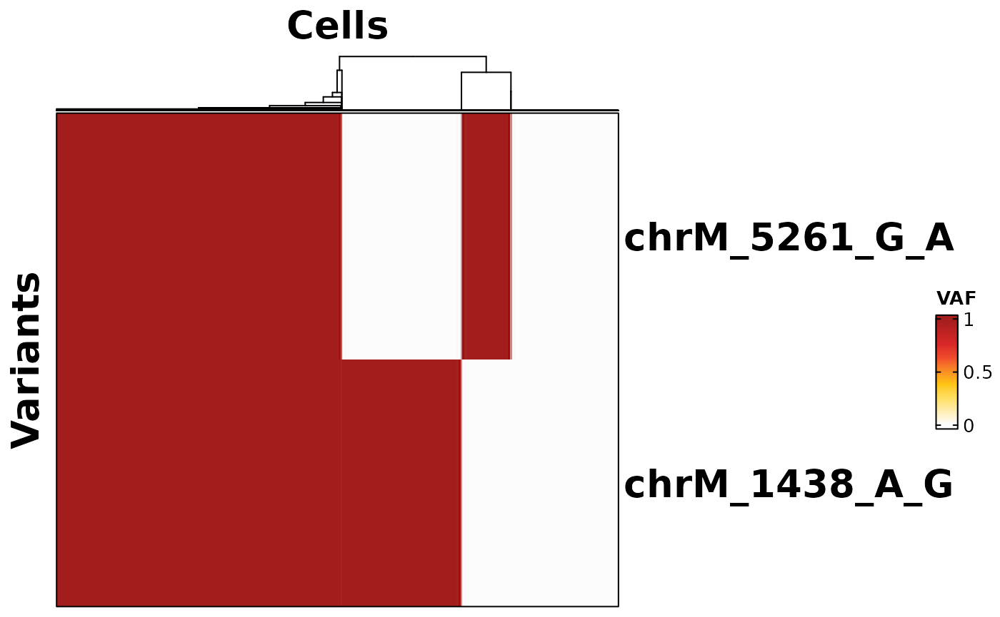
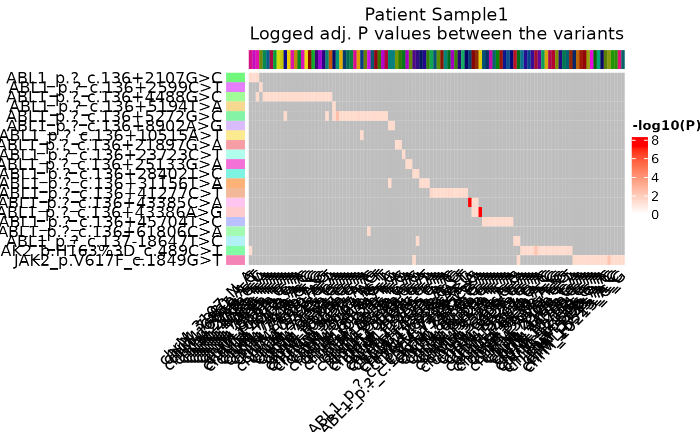

SiGURD vignette
Martin Grasshoff
Ivan G. Costa
Institute for Computational Genomics, Faculty of Medicine, RWTH Aachen University, Aachen, 52074 GermanySiGURD.Rmd
suppressPackageStartupMessages(require(sigurd))
suppressPackageStartupMessages(require(SummarizedExperiment))
suppressPackageStartupMessages(require(VariantAnnotation))R version: R version 4.2.1 (2022-06-23)
Package version: 0.2.0
Your input file.
sample_path <- system.file("extdata", "Input_Example_local.csv", package = "sigurd")
sample_file <- read.csv(sample_path)
print(sample_file)## patient sample source type
## 1 Sample1 Minus_Sample1 VarTrix scRNAseq_Somatic
## 2 Sample1 Minus_Sample1 VarTrix scRNAseq_MT
## 3 Sample1 Minus_Sample1 MAEGATK scRNAseq_MT
## 4 Sample1 Plus_Sample1 VarTrix scRNAseq_Somatic
## 5 Sample1 Plus_Sample1 VarTrix scRNAseq_MT
## 6 Sample1 Plus_Sample1 MAEGATK scRNAseq_MT
## 7 SW_CellLineMix_All_mr3 SW_CellLineMix_All_mr3 MAEGATK Amplicon_MT
## 8 SW_CellLineMix_RNAseq_mr3 SW_CellLineMix_RNAseq_mr3 MAEGATK scRNAseq_MT
## 9 TenX_BPDCN712_All_mr3 TenX_BPDCN712_All_mr3 MAEGATK Amplicon_MT
## 10 TenX_BPDCN712_RNAseq_mr3 TenX_BPDCN712_RNAseq_mr3 MAEGATK scRNAseq_MT
## bam
## 1 ~/test_data/Minus_Sample1/possorted_genome_bam.bam
## 2 ~/test_data/Minus_Sample1/possorted_genome_bam.bam
## 3 ~/test_data/Minus_Sample1/possorted_genome_bam.bam
## 4 ~/test_data/Plus_Sample1/possorted_genome_bam.bam
## 5 ~/test_data/Plus_Sample1/possorted_genome_bam.bam
## 6 ~/test_data/Plus_Sample1/possorted_genome_bam.bam
## 7 NADA
## 8 NADA
## 9 NADA
## 10 NADA
## input_folder
## 1 ~/test_data/VarTrix/Somatic/
## 2 ~/test_data/VarTrix/MT/
## 3 ~/test_data/MAEGATK/
## 4 ~/test_data/VarTrix/Somatic/
## 5 ~/test_data/VarTrix/MT/
## 6 ~/test_data/MAEGATK/
## 7 ~/labcluster_data/mg000001/sigurd_test_scripts/MAESTER_data/
## 8 ~/labcluster_data/mg000001/sigurd_test_scripts/MAESTER_data/
## 9 ~/labcluster_data/mg000001/sigurd_test_scripts/MAESTER_data/
## 10 ~/labcluster_data/mg000001/sigurd_test_scripts/MAESTER_data/
## cells
## 1 ~/test_data/Minus_Sample1/Minus_Sample1_barcodes.tsv
## 2 ~/test_data/Minus_Sample1/Minus_Sample1_barcodes.tsv
## 3 ~/test_data/Minus_Sample1/Minus_Sample1_barcodes.tsv
## 4 ~/test_data/Plus_Sample1/Plus_Sample1_barcodes.tsv
## 5 ~/test_data/Plus_Sample1/Plus_Sample1_barcodes.tsv
## 6 ~/test_data/Plus_Sample1/Plus_Sample1_barcodes.tsv
## 7 NADA
## 8 NADA
## 9 NADA
## 10 NADAYour vcf files.
These files are needed for VarTrix and not MGATK/MAEGATK. Since MAEGATK only analyses the mitochondrial genome, you only need to decide on a chromosomal prefix for your data. See the loading of data below.
vcf_path <- system.file("extdata", "CosmicSubset_filtered.vcf", package = "sigurd")
vcf <- readVcf(vcf_path)
vcf_info <- info(vcf)
print(vcf)## class: CollapsedVCF
## dim: 1684 0
## rowRanges(vcf):
## GRanges with 5 metadata columns: paramRangeID, REF, ALT, QUAL, FILTER
## info(vcf):
## DataFrame with 10 columns: GENE, STRAND, GENOMIC_ID, LEGACY_ID, CDS, AA, H...
## info(header(vcf)):
## Number Type Description
## GENE 1 String Gene name
## STRAND 1 String Gene strand
## GENOMIC_ID 1 String Genomic Mutation ID
## LEGACY_ID 1 String Legacy Mutation ID
## CDS 1 String CDS annotation
## AA 1 String Peptide annotation
## HGVSC 1 String HGVS cds syntax
## HGVSP 1 String HGVS peptide syntax
## HGVSG 1 String HGVS genomic syntax
## CNT 1 Integer How many samples have this mutation
## geno(vcf):
## List of length 0:
print(vcf_info)## DataFrame with 1684 rows and 10 columns
## GENE STRAND GENOMIC_ID LEGACY_ID CDS
## <character> <character> <character> <character> <character>
## 1 ABL1 + NA COSN17133235 c.136+2107G>C
## 2 ABL1 + NA COSN14774721 c.136+2599C>T
## 3 ABL1 + NA COSN17133236 c.136+3198G>C
## 4 ABL1 + NA COSN17133237 c.136+4488G>C
## 5 ABL1 + NA COSN17133050 c.136+5055C>T
## ... ... ... ... ... ...
## 1680 WT1 - NA COSN6609219 c.872+82G>T
## 1681 WT1 - NA COSN17132919 c.872+16G>A
## 1682 WT1 - NA COSN17134797 c.770-57C>T
## 1683 WT1 - NA COSM5020955 c.594C>T
## 1684 ZRSR2 + NA COSM3035276 c.1338_1343dup
## AA HGVSC HGVSP
## <character> <character> <character>
## 1 p.? ENST00000372348.6:c... NA
## 2 p.? ENST00000372348.6:c... NA
## 3 p.? ENST00000372348.6:c... NA
## 4 p.? ENST00000372348.6:c... NA
## 5 p.? ENST00000372348.6:c... NA
## ... ... ... ...
## 1680 p.? ENST00000332351.7:c... NA
## 1681 p.? ENST00000332351.7:c... NA
## 1682 p.? ENST00000332351.7:c... NA
## 1683 p.N198%3D ENST00000332351.7:c... ENSP00000331327.3:p...
## 1684 p.S447_R448dup ENST00000307771.7:c... ENSP00000303015.7:p...
## HGVSG CNT
## <character> <integer>
## 1 9:g.130716562G>C 10
## 2 9:g.130717054C>T 10
## 3 9:g.130717653G>C 10
## 4 9:g.130718943G>C 10
## 5 9:g.130719510C>T 11
## ... ... ...
## 1680 11:g.32427874C>A 74
## 1681 11:g.32427940C>T 132
## 1682 11:g.32428115G>A 108
## 1683 11:g.32434752G>A 73
## 1684 X:g.15823131_1582313.. 10
vcf_path_mt <- system.file("extdata", "chrM_Input_VCF_NoMAF_Filtering.vcf", package = "sigurd")
vcf_mt <- readVcf(vcf_path_mt)
vcf_mt_info <- info(vcf_mt)
print(vcf_mt)## class: CollapsedVCF
## dim: 49708 0
## rowRanges(vcf):
## GRanges with 5 metadata columns: paramRangeID, REF, ALT, QUAL, FILTER
## info(vcf):
## DataFrame with 1 column: ID
## info(header(vcf)):
## Number Type Description
## ID A Character Mutation
## geno(vcf):
## List of length 0:
print(vcf_mt_info)## DataFrame with 49708 rows and 1 column
## ID
## <CharacterList>
## chrM:1_G/A 1_G>A
## chrM:3_T/A 3_T>A
## chrM:4_C/A 4_C>A
## chrM:6_C/A 6_C>A
## chrM:8_G/A 8_G>A
## ... ...
## chrM:16564_A/T 16564_A>T
## chrM:16565_C/T 16565_C>T
## chrM:16566_G/T 16566_G>T
## chrM:16567_A/T 16567_A>T
## chrM:16569_G/T 16569_G>TLoading and filtering the input data.
We load the data per patient and merge all the associated samples automatically. In the input file, you have to include which software tool was used for the analysis. The source can either be vartrix or maegatk/mgatk. The respective loading function will then only load the files intended for it. The types of data available are: - scRNAseq_Somatic: the standard 10X results analysed for somatic variants. - scRNAseq_MT: the standard 10X results analysed for MT variants. - Amplicon_Somatic: amplicon data analysed for somatic variants. - Amplicon_MT: amplicon data analysed for MT variants.
Since the MT results are denser, they take longer to load.
Sample1_scRNAseq_Somatic <- LoadingVarTrix_typewise(samples_file = sample_path, vcf_path = vcf_path, patient = "Sample1", type_use = "scRNAseq_Somatic")## [1] "We read in the samples file."
## [1] "We subset to the patient of interest."
## [1] "We get the different samples."
## [1] "We load the SNV files."
## [1] "We read the variants."
## [1] "We read in the cell barcodes output by CellRanger as a list."
## [1] "We read in the vcf file."
## [1] "We generate more accessible names."
## [1] "We read in the different sparse genotype matrices as a list."
## [1] "We have a slot per type of input data."
## [1] "Loading sample 1 of 2"
## [1] "Loading sample 2 of 2"
## [1] "We generate a large data.frame of all the snv matrices."
## [1] "We remove the matrix lists."
## [1] "We remove variants, that are not detected in at least 2 cells."
## [1] "We remove cells that are always NoCall."
## [1] "scRNAseq_Somatic Variants: 31"
## [1] "scRNAseq_Somatic Cells: 195"
## [1] "We transform the sparse matrices to matrices, so we can calculate the fraction."
## [1] "We generate a SummarizedExperiment object containing the fraction and the consensus matrices."
Sample1_scRNAseq_MT <- LoadingVarTrix_typewise(samples_file = sample_path, vcf_path = vcf_path_mt, patient = "Sample1", type_use = "scRNAseq_MT")## [1] "We read in the samples file."
## [1] "We subset to the patient of interest."
## [1] "We get the different samples."
## [1] "We load the SNV files."
## [1] "We read the variants."
## [1] "We read in the cell barcodes output by CellRanger as a list."
## [1] "We read in the vcf file."
## [1] "We generate more accessible names."
## [1] "We read in the different sparse genotype matrices as a list."
## [1] "We have a slot per type of input data."
## [1] "Loading sample 1 of 2"
## [1] "Loading sample 2 of 2"
## [1] "We generate a large data.frame of all the snv matrices."
## [1] "We remove the matrix lists."
## [1] "We remove variants, that are not detected in at least 2 cells."
## [1] "We remove cells that are always NoCall."
## [1] "scRNAseq_MT Variants: 30324"
## [1] "scRNAseq_MT Cells: 10277"
## [1] "We transform the sparse matrices to matrices, so we can calculate the fraction."
## [1] "We generate a SummarizedExperiment object containing the fraction and the consensus matrices."
Sample1_combined <- CombineSEobjects(se_somatic = Sample1_scRNAseq_Somatic, se_MT = Sample1_scRNAseq_MT, suffixes = c("_somatic", "_MT"))
rm(Sample1_scRNAseq_Somatic, Sample1_scRNAseq_MT)
Sample1_combined <- Filtering(Sample1_combined, min_cells_per_variant = 2, fraction_threshold = 0.05)## [1] "We assume that cells with a fraction smaller than our threshold are actually reference."
## [1] "We set consensus values to 1 (Ref) and fraction values to 0."
## [1] "We do not set fractions between 0.05 and 1 to 1."
## [1] "This way, we retain the heterozygous information."
## [1] "We remove all the variants that are always NoCall."
## [1] "We remove variants, that are not at least detected in 2 cells."
## [1] "We remove all cells that are not >= 1 (Ref) for at least 1 variant."
Sample1_combined <- VariantBurden(Sample1_combined)Determing MT variants of interest.
This thresholding was adapted from Miller et al. https://github.com/petervangalen/MAESTER-2021 https://www.nature.com/articles/s41587-022-01210-8
The heatmap needs some time to plot, since the cells are clustered.
voi_ch <- VariantQuantileThresholding(SE = Sample1_combined, min_coverage = 2, quantiles = c(0.1, 0.9), thresholds = c(0.1, 0.9))## [1] "Get the mean allele frequency and coverage."
## [1] "Get the quantiles of the VAFs of each variant."
## [1] "Collect all information in a tibble"
## [1] "Thresholding using the quantile approach."
hm <- HeatmapVoi(SE = Sample1_combined, voi = voi_ch)
print(hm)
Association of Variants
Using Fisher’s Exact test, we find co-present variants. You can also use the correlation between variants. For this, we combine the somatic and the MT results. Since the possible number of tests/correlations is quite large, you can use multiple cores to perform the calculations.
Sample1_split_rows <- RowWiseSplit(Sample1_combined, remove_nocalls = FALSE)
results_fishertest <- VariantWiseFisherTest(Sample1_split_rows, n_cores = 8)## [1] "Testing Variant: ABL1_p.?_c.136+2107G>C, 1 out of 31"
## [1] "Testing Variant: ABL1_p.?_c.136+2599C>T, 2 out of 31"
## [1] "Testing Variant: ABL1_p.?_c.136+4488G>C, 3 out of 31"
## [1] "Testing Variant: ABL1_p.?_c.136+5055C>T, 4 out of 31"
## [1] "Testing Variant: ABL1_p.?_c.136+5194T>A, 5 out of 31"
## [1] "Testing Variant: ABL1_p.?_c.136+5272G>C, 6 out of 31"
## [1] "Testing Variant: ABL1_p.?_c.136+8056A>G, 7 out of 31"
## [1] "Testing Variant: ABL1_p.?_c.136+8902A>G, 8 out of 31"
## [1] "Testing Variant: ABL1_p.?_c.136+10515A>T, 9 out of 31"
## [1] "Testing Variant: ABL1_p.?_c.136+21897G>A, 10 out of 31"
## [1] "Testing Variant: ABL1_p.?_c.136+23723C>T, 11 out of 31"
## [1] "Testing Variant: ABL1_p.?_c.136+25002dup, 12 out of 31"
## [1] "Testing Variant: ABL1_p.?_c.136+25133G>A, 13 out of 31"
## [1] "Testing Variant: ABL1_p.?_c.136+28402T>C, 14 out of 31"
## [1] "Testing Variant: ABL1_p.?_c.136+28879A>G, 15 out of 31"
## [1] "Testing Variant: ABL1_p.?_c.136+31156T>A, 16 out of 31"
## [1] "Testing Variant: ABL1_p.?_c.136+32491G>A, 17 out of 31"
## [1] "Testing Variant: ABL1_p.?_c.136+41277C>T, 18 out of 31"
## [1] "Testing Variant: ABL1_p.?_c.136+43385C>A, 19 out of 31"
## [1] "Testing Variant: ABL1_p.?_c.136+43386A>G, 20 out of 31"
## [1] "Testing Variant: ABL1_p.?_c.136+45704T>C, 21 out of 31"
## [1] "Testing Variant: ABL1_p.?_c.136+47620G>A, 22 out of 31"
## [1] "Testing Variant: ABL1_p.?_c.136+55841C>T, 23 out of 31"
## [1] "Testing Variant: ABL1_p.?_c.136+56750T>C, 24 out of 31"
## [1] "Testing Variant: ABL1_p.?_c.136+61806C>A, 25 out of 31"
## [1] "Testing Variant: ABL1_p.?_c.137-58577G>A, 26 out of 31"
## [1] "Testing Variant: ABL1_p.?_c.137-18647T>C, 27 out of 31"
## [1] "Testing Variant: ABL1_p.?_c.137-18632_137-18631insC, 28 out of 31"
## [1] "Testing Variant: JAK2_p.H163%3D_c.489C>T, 29 out of 31"
## [1] "Testing Variant: JAK2_p.V617F_c.1849G>T, 30 out of 31"
## [1] "Testing Variant: JAK2_p.?_c.1865-502dup, 31 out of 31"
## [1] "We remove the NA P values."
## [1] "We remove the SNPs with a odds ratio lower than 1."
## [1] "Adjusting P values using fdr."
rm(Sample1_split_rows)
variant_association_heatmap <- VariantFisherTestHeatmap(results_fishertest, patient = "Sample1", min_alt_cells = 3)## [1] "We get the unique variants."
## [1] "Getting the maximum P value."
## [1] "We set insignificant P values to NA."
## [1] "We generate a matrix with the adjusted P values."
## [1] "Setting the column and row annotations for the heat map."
## [1] "Since we can have no results left after the subsetting, we check if the P value matrix has values."
## [1] "Generating the actual heat map."
print(variant_association_heatmap)